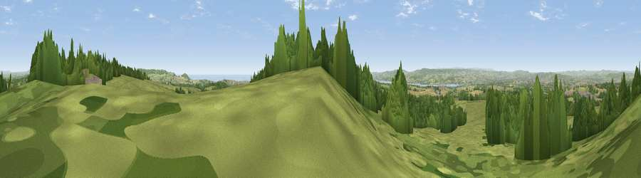

Viewpoint near Woodbury
#4064 in England · top 7% of its area beats it · near WoodburyWhere it is
The exact computed spot (SY 03225 87738). Click the marker for map links.
The view, rendered

A 360° render of this exact spot computed from the terrain model, tree cover and land cover — summer colours, afternoon light, calibrated against photographs of famous viewpoints. Real trees, hedges and buildings will differ in detail.
The panorama
Grey silhouette: terrain skyline in each direction (720 bearings, Earth curvature and refraction included). Dashed green: skyline with trees (+15 m) and buildings (+8 m) as obstacles. Blue strip: how far the ground is visible on each bearing.
Where the view opens
Wedge length = distance to the farthest visible ground on that bearing (vegetation-aware). Rings at 10, 25 and 50 km.
What fills the view
55% grassland · 30% woodland · 9% cropland · 4% built-up · 3% water
Angular shares of the visible panorama (visual magnitude), not map area. Landscape diversity 0.50 (0–1 Shannon).
Key numbers
More beautiful places nearby
The staircase of upgrades: each row has a higher view potential than everything closer. Driving times are estimates from straight-line distance, calibrated against real road routing — check an actual route before setting out.
| Place | Direction | Drive | Score |
|---|---|---|---|
| Viewpoint near Colaton Raleigh | E · 7 km | ~14 min | 82.1 |
| High Peak | ESE · 7 km | ~15 min | 85.3 |
| Golden Cap | E · 38 km | ~57 min | 88.7 |
| The Knoll | E · 50 km | ~71 min | 91.0 |
50.68122, -3.37114 · source: screening · position refined by local search. Computed location — check access rights before visiting.